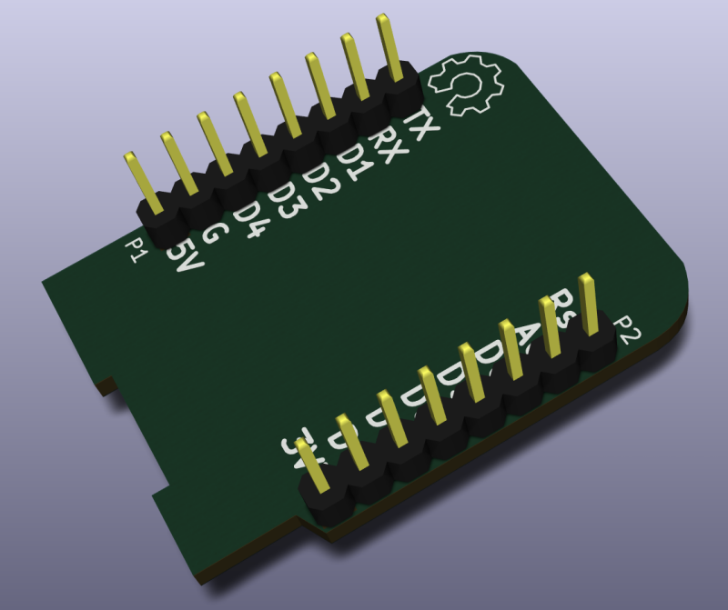

This project template is the basis of an expansion board for the
D1 mini board.
This base project includes a PCB edge defined
as the same size as the D1 mini PCB with the connectors placed
correctly to align the two boards. All IO present on the D1 mini
board is connected to the project through the expansion
headers.
The board looks like the following:

Dwgs.User layer show mechanical components of the D1mini board.
©2016 Jérôme Labidurie
Licence: CC:BY-SA 3.0
dinask.eu